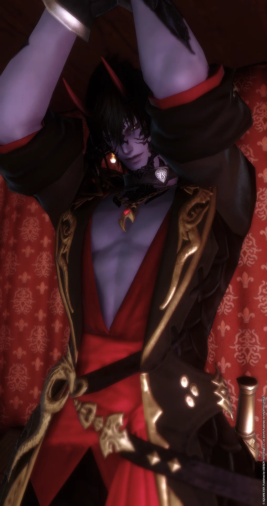

VEIL / THE ARCHIVE
GENTLEMEN/
01 / THE COLLECTION
Meet the Gentlemen
在黑夜與聚光燈之間，
每個人都有不只一種面貌。

ARCHIVE 001 HOUSE PUBLIC RELATIONS
囚夜
QIÚ YÈ神祕的外表下，是天然、直率且不時讓人措手不及的反差。據說他原本只是來應徵攝影師。
ENTER PROFILE
VEIL / CAMERA DEPARTMENT
PORTRAIT PENDING
ARCHIVE 002 IN-HOUSE PHOTOGRAPHER
晷藍
PHOTOGRAPHER深灰色的髮絲與紫色眼眸，總讓人覺得他身上帶著幾分神秘而疏離的氣息。
不過，這份印象通常維持不了太久。因為仔細觀察便會發現，他大多時候並不是在思考什麼深奧的事情，只是單純地在發呆。
ENTER PROFILE
VEIL / CANELE
PORTRAIT PENDING
ARCHIVE 003 RESIDENT YOUNG MASTER / BAR
Canele
駐店少爺親切、隨性，總是帶著一抹無害的笑容。
初次見面時，Canele 給人的印象或許像是誤入夜店的年輕貴族少爺。外貌稚嫩，氣質輕快，偶爾還帶著幾分孩子氣，讓人很難將他與一間俱樂部的幕後經營聯想在一起。
ENTER PROFILE
IZAYOI KOUPORTRAIT PENDING
ARCHIVE ⋰⟡⋱ ⛵︎ ⌁̷⋯ CREATIVE / DESIGN / TECHNICAL DIRECTOR
十六夜航
IZAYOI KOU「月光尚懂得姍姍來遲，今夜又何必如此匆忙？」
俊雅從容、略帶慵懶的駐店（？）總監。將技術與美感藏在薄幕之後，不親自駛入夜色，卻為夜航者留下一束光。
ENTER PROFILE
駐館公關優先列示，幕後總監置於名錄末尾且不開放指名。所有角色互動均以雙方意願與舒適界線為準。